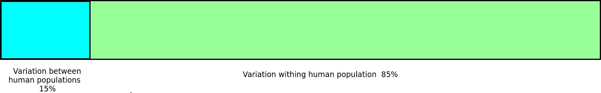
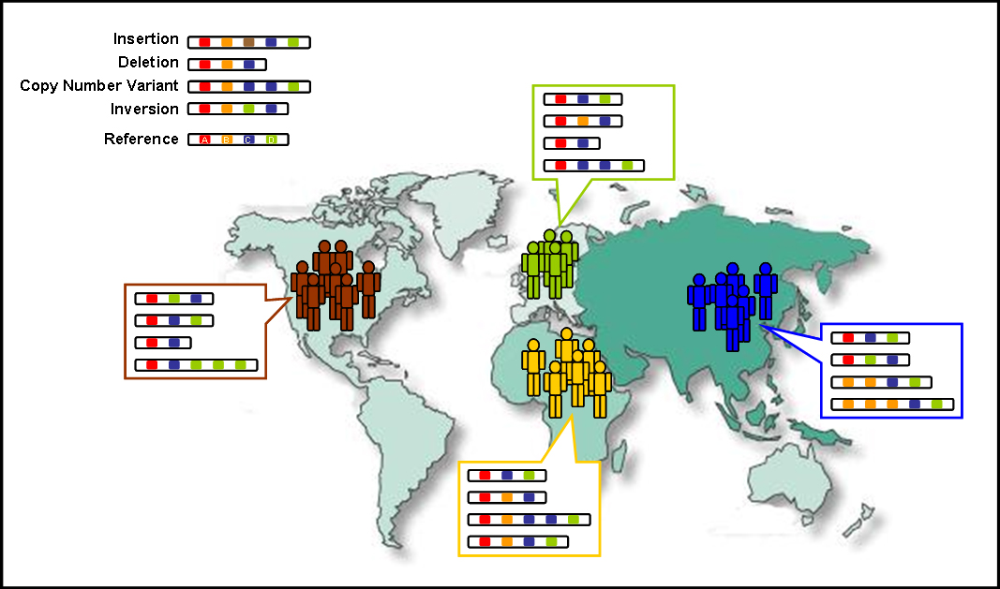
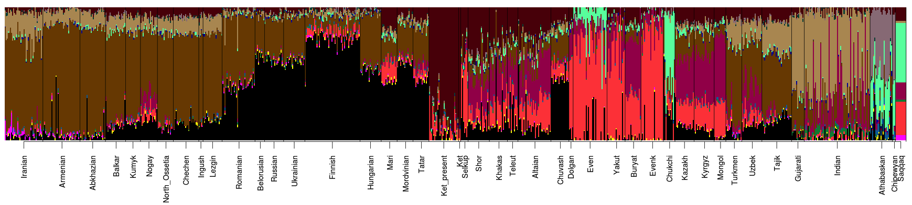

Identifying Human Migration Patterns Using DNA
Visualizing results of admixture analysis in R Anasstassiya Zidkova, PhD
This presentation is about finding our roots...
Where do we come from?
Modern migration

Schich et al., 2014
What about migration that happend before human could write?
We can trace human migration using:
Language they speak
Things they make
DNA they have


We are almost the same...


However, things are a little bit more complicated ...


We can compare different populations and model migration patterns 
Migration to America: three wave hypothesis
 Jobling et al., 2012
Jobling et al., 2012
Dene-Yeniseian hypothesis

Admixture analysis
Model-based approach using number of ancestry populations determined by user
Can correct ancestry of self-identified population samples
Assumptions
Linkage equilibrium between markers
Unrelated individuals
Admixture parameters
Unsupervised admixture
Number of modelled ancestral population: 2-20
Sample: 1564 individuals from 86 populations
Number of variable genetic markers: 33,039
Admixture plot

Admixture plot K-14 
Thank you for your attention! anastazie.d@gmail.com